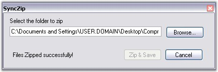

The following code example illustrates how to zip all files in subfolders in XlsIO by using the Syncfusion.Compression.Zip namespace.
|
[C#]
void SubFoldersFiles(string path) { DirectoryInfo dInfo = new DirectoryInfo(path); foreach (DirectoryInfo d in dInfo.GetDirectories()) { SubFoldersFiles(d.FullName); arr.Add(d); } }
// Zip and save the file. private void button1_Click(object sender, EventArgs e) { SubFoldersFiles(this.textBox1.Text);
if (Directory.Exists(this.textBox1.Text)) { AddRootFiles();
AddSubFoldersFiles();
// Saving zipped file. SaveFileDialog saveDialog = new SaveFileDialog(); saveDialog.Filter = "Zip Files | *.zip"; if (saveDialog.ShowDialog() == DialogResult.OK) zipArchive.Save(saveDialog.FileName);
zipArchive.Close(); label1.Text = "Files Zipped successfully!"; button1.Enabled = false; } }
private void AddRootFiles() { foreach (string rootfiles in Directory.GetFiles(this.textBox1.Text)) { stream = new FileStream(rootfiles, FileMode.Open, FileAccess.Read); att = File.GetAttributes(rootfiles); item = new ZipArchiveItem(rootfiles, stream, true, att); zipArchive.AddItem(item); } }
private void AddSubFoldersFiles() { foreach (DirectoryInfo dInfo in arr) { FileInfo[] fInfo = dInfo.GetFiles(); foreach (FileInfo file in fInfo) { string str = file.FullName; stream = new FileStream(str, FileMode.Open, FileAccess.Read); FileAttributes att = File.GetAttributes(str); zipArchive.AddItem(new Syncfusion.Compression.Zip.ZipArchiveItem(str, stream, true, att)); } } }
// Browse folder. private void button2_Click(object sender, EventArgs e) { // Select the folder to be zipped. FolderBrowserDialog fldrDialog = new FolderBrowserDialog(); fldrDialog.Description = "Select the folder to zip. Note: All its subfolders and its files will zip too."; if (fldrDialog.ShowDialog() == DialogResult.OK) { this.textBox1.Text = fldrDialog.SelectedPath; this.button1.Enabled = true; } }
// Close private void button3_Click(object sender, EventArgs e) { Close(); } |
|
[VB.NET]
Private Sub SubFoldersFiles(ByVal path As String) Dim dInfo As New IO.DirectoryInfo(path) For Each d As IO.DirectoryInfo In dInfo.GetDirectories() SubFoldersFiles(d.FullName) arr.Add(d) Next End Sub
' Zip and save the file. Private Sub button1_Click(ByVal sender As Object, ByVal e As EventArgs) SubFoldersFiles(Me.textBox1.Text)
If Directory.Exists(Me.textBox1.Text) Then AddRootFiles()
AddSubFoldersFiles()
' Saving zipped file. Dim saveDialog As New SaveFileDialog() saveDialog.Filter = "Zip Files | *.zip" If saveDialog.ShowDialog() = Windows.Forms.DialogResult.OK Then zipArchive.Save(saveDialog.FileName) End If
zipArchive.Close() label1.Text = "Files Zipped successfully!" button1.Enabled = False End If End Sub
Private Sub AddRootFiles()
For Each rootfiles As String In Directory.GetFiles(Me.textBox1.Text) stream = New FileStream(rootfiles, FileMode.Open, FileAccess.Read) att = File.GetAttributes(rootfiles) item = New ZipArchiveItem(rootfiles, stream, True, att) zipArchive.AddItem(item) Next End Sub
Private Sub AddSubFoldersFiles() For Each dInfo As IO.DirectoryInfo In arr Dim fInfo As FileInfo() = dInfo.GetFiles() For Each file As FileInfo In fInfo Dim str As String = file.FullName stream = New FileStream(str, FileMode.Open, FileAccess.Read) Dim att As FileAttributes = file.GetAttributes(str) zipArchive.AddItem(New Syncfusion.Compression.Zip.ZipArchiveItem(str, stream, True, att)) Next Next End Sub
' Browse folder. Private Sub button2_Click(ByVal sender As Object, ByVal e As EventArgs) ' Select the folder to be zipped. Dim fldrDialog As New FolderBrowserDialog() fldrDialog.Description = "Select the folder to zip. Note: All its subfolders and its files will zip too." If fldrDialog.ShowDialog() = Windows.Forms.DialogResult.OK Then Me.textBox1.Text = fldrDialog.SelectedPath Me.button1.Enabled = True End If End Sub
' Close Private Sub button3_Click(ByVal sender As Object, ByVal e As EventArgs) Close() End Sub |

Figure 168: SyncZip dialog box to zip the files